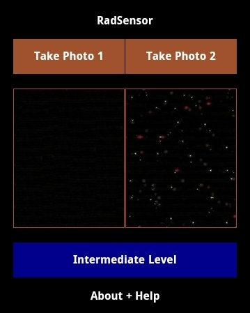

RadSensor | 简单的盖革计数器

RadSensor is a simple Geiger-Müller counter, based on camera lens of Android smartphone, for detecting strong radiation, such as industrial radioactive sources. [WARNING: USE AT YOUR OWN RISK]
RadSensor是一个基于安卓手机相机镜头的简单的盖革计数器，用来检测强辐射，例如工业放射源。［警告：使用风险自负］